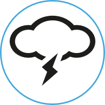

<html>
  
    <head>
    <meta charset='utf-8' />
    <meta http-equiv="X-UA-Compatible" content="chrome=1" />
    <meta name="description" content="With extended feauture you can get all the weather information from Yahoo! Wether, openweathermap, weatherundergound, weather.com, forecast.io. Android app to get webcam images from cities" />
	<meta content='android weather, weather api,code,source,weather,weather library,yahoo! weather, weatherunderground,api,android weather,android app,open source library' name='keywords'/>
	<meta content='https://plus.google.com/111119552788205366558' name='author'/>
	<meta content='https://plus.google.com/111119552788205366558' name='publisher'/>

    <meta name="google-site-verification" content="2gOcYkpKozlNli7dQdtWHFue5qWjPw7YCynvKKb9Xkk" />

	<link rel="stylesheet" href="./css/bootstrap-combined.min.css">
	<link rel="stylesheet" href="./css/site.css">
	<link rel="stylesheet" href="./css/bjqs.css">
	<link href="http://fonts.googleapis.com/css?family=Roboto:400,300italic,100,100italic,300" rel="stylesheet" type="text/css">

	<script src="./javascripts/jquery-1.7.1.min.js"></script>
    <script src="./javascripts/bjqs-1.3.min.js"></script>
	<script src="./javascripts/jquery.smooth-scroll.min.js"></script>
	
	<script type="text/javascript">var switchTo5x=true;</script>
<script type="text/javascript" src="http://w.sharethis.com/button/buttons.js"></script>
<script type="text/javascript">stLight.options({publisher: "7986e5e5-4e81-4997-a3dd-43955d4a952c", doNotHash: false, doNotCopy: false, hashAddressBar: false});</script>


    <title>Android Weatherlib Weather Extended Feature</title>
  </head>


   <body data-target=".content-nav"  >


    <header style="background-color:#3F51B5">
    
    <ul class="nav nav-pills" style="background:#FFFFFF; width:100%">
  <li role="presentation"><a href="./index.html">Home</a></li>
  <li role="presentation"><a href="./android_weatherlib_start.html">Getting started</a></li>
  <li role="presentation"><a href="./android_weatherlib_search_city.html">Documentation</a></li>
  <li role="presentation"><a href="./javadoc/index.html">Javadoc</a></li>

</ul>

      <div class="container" >

        <div class="row"  >
		  <div class="span1" style="margin-top:5px">
			<a href="https://plus.google.com/communities/117946761543584564970" target="_blank"></a>
		  </div>

          <div class="span5">		    
            <h1 style="text-shadow: 2px 2px 2px rgba(150, 150, 150, 1);">Weatherlib <br/> <font style="font-size:large; font-style:italic;">Extended feature</font></h1> 
          </div>
          <div class="span6">
            <menu>
              <ul>
                <li><a href="#starthere" class="menu download">Latest version <strong>1.5.8</strong></a></li>
                <li><a href="https://github.com/survivingwithandroid/WeatherLib" data-title="View GitHub Project" class="menu github"></a></li>               
              </ul>
            </menu>
          </div>
      </div>

    </header>


<section id="body">
<div class="container">

<div class="row">

<span class='st_sharethis_large' displayText='ShareThis'></span>
<span class='st_googleplus_large' displayText='Google +'></span>
<span class='st_facebook_large' displayText='Facebook'></span>
<span class='st_twitter_large' displayText='Tweet'></span>
<span class='st_linkedin_large' displayText='LinkedIn'></span>
<span class='st_dzone_large' displayText='DZone'></span>
<span class='st_email_large' displayText='Email'></span>
</div>

<div class="row">
<div class="span12"> 
<br/><br/></br/><h2>Introduction</h2>
This paragraph introduces a new aspect of <strong>Android Weatherlib</strong>. By now we
talked about features shipped with the library, now it is time to describe some specific 
<em>weather provider features</em>. These are features that are tighly bound to the weather provider: i.e.
<em>Webcam</em> images etc.
<strong>Weatherlib</strong> provides some example how to use this feature with <strong>Weatherunderground</strong>
or <strong>Weather.com</strong>.<br/>
You are free to extend and implement your specific provider features. Think about it like a plugin extension
where you can implement your logic.<br/><br/>
    <table class="table_support">
      <tr> 
        <td><strong>Openweathermap</strong></td>
        <td><font class="ok_support">Yes</font></td>
      </tr>
      <tr>
        <td><strong>Weatherunderground<br/>Weather.com</strong></td>
         <td><font class="no_support">No</font></td>
      </tr>
      <tr>
        <td><strong>Yahoo! Weather</strong></td>
        <td><font class="no_support">NO</font></td>
      </tr>
      <tr>
        <td><strong>Forecast.io</strong></td>
         <td><font class="no_support">NO</font></td>
      </tr>
    </table>
<br/>
<br/>
Bear in mind that where it is not supported, just means the code isn't still developed and it is up to you
to implement the logic!

<h2>Webcam images</h2>
To get a <em>Webcam images from a city</em> you simply have to: <br/><br/>
<pre class="prettyprint">
WeatherRequest wRequest = new WeatherRequest("/q/zmw:00000.1.16181");
WebcamFeatureRequest req = new WebcamFeatureRequest(wRequest, config);
WebcamResponseParser parser = new WebcamResponseParser();
</pre>
<br/>
where <em>config</em> is an instanceof <em>WeatherConfig</em>. In the case of <strong>Weatherunderground</strong>, it is necessary to pass
a key that represents your account, and you pass it through config instance.
<br/>
It is necessary to create a custom <em>feature request</em> i.e. <em>WebcamFeatureRequest</em>
and a custom response parser <em>WebcamResponseParser</em>, that is able to parse the response from the weather provider.
<br/>
Once we have the <strong>request</strong> and the <strong>parser</strong>, it is time to make the request:
<br/><br/>
<pre class="prettyprint">
client.getProviderWeatherFeature(wRequest, req, parser, new WeatherClient.GenericRequestWeatherEventListener<List<WebcamFeatureResponse>>() {
           @Override
           public void onResponseRetrieved(List<WebcamFeatureResponse> data) {
               Log.d("Webcam", "Data ["+data+"]");
               for (WebcamFeatureResponse resp : data) {
                   Log.d("Wecbam", "Name ["+resp.city+"] - URL ["+resp.currentImageUrl+"]");

               }
               if (data != null && data.size() > 0) {
                   // We take the first element
                   WebcamFeatureResponse resp = data.get(0);
                   client.getImage(resp.currentImageUrl, new WeatherClient.WeatherImageListener() {
                       @Override
                       public void onImageReady(Bitmap image) {
                           webcamView.setImageBitmap(image);
                       }

                       @Override
                       public void onWeatherError(WeatherLibException wle) {
                            // Never used in this case
                       }

                       @Override
                       public void onConnectionError(Throwable t) {
                           Toast.makeText(getActivity(), "Connection error", Toast.LENGTH_SHORT).show();
                       }
                   });
               }
           }

           @Override
           public void onWeatherError(WeatherLibException wle) {
               Toast.makeText(getActivity(), "Error parsing the response", Toast.LENGTH_SHORT).show();
               wle.printStackTrace();
           }

           @Override
           public void onConnectionError(Throwable t) {

           }
       });
 
</pre>
<br/>
<br/>where <em>WebcamFeatureResponse</em> holds the data extracted by the <em>parser</em> from the response.

<h2>Custom weather request</h2>
To create a custom weather request to a specific provider, other than those already supported by <strong>Android Weatherlib</strong>
you have to create a class that extends <em>WeahterundergroundProviderFeature</em> that in turn extends <em>WeatherProviderFeature</em>.
Below, there is an example of <em>WebcamFeatureRequest</em><br/><br/>
<pre class="prettyprint">
public class WebcamFeatureRequest extends WeatherUndergroundProviderFeature {

    public WebcamFeatureRequest(WeatherRequest request, WeatherConfig config) {
        super(request, config);
    }

    @Override
    public String getURL() throws ApiKeyRequiredException {
        if (config.ApiKey == null || config.ApiKey.equals(""))
            throw new ApiKeyRequiredException();

        String url = "http://api.wunderground.com/api" + "/" + config.ApiKey + "/webcams/";
        url = addLanguage(url);

        if (request.getCityId() != null)
            url = url + request.getCityId() + ".json";
        else
            url = url + request.getLat() + "," + request.getLon() + ".json";

        return url;
    }
}
</pre>

<h2>Custom weather response parser</h2>
Once the <em>custom weather request</em> is ready, it is time to create the custom response parser, i.e <em>WebcamResponseParser</em>.
<br/><br/>
<pre class="prettyprint">
public class WebcamResponseParser extends GenericResponseParser<List<WebcamFeatureResponse>> {
    @Override
    public List<WebcamFeatureResponse> parseData(String data) throws WeatherLibException {
        List<WebcamFeatureResponse> result = new ArrayList<WebcamFeatureResponse>();
        try {
            JSONObject jObj = new JSONObject(data);
            JSONArray webcams = jObj.getJSONArray("webcams");
            for (int i=0; i < webcams.length(); i++) {
                JSONObject webcam = webcams.getJSONObject(i);

                WebcamFeatureResponse resp = new WebcamFeatureResponse();
                resp.city = webcam.getString("city");
                resp.state = webcam.getString("state");
                resp.country = webcam.getString("country");
                resp.camId = webcam.getString("camid");
                resp.handle = webcam.getString("handle");
                resp.link = webcam.getString("link");
                resp.linkText = webcam.getString("linktext");
                resp.currentImageUrl = webcam.getString("CURRENTIMAGEURL");
                resp.widgetCurrentImageUrl = webcam.getString("WIDGETCURRENTIMAGEURL");

                result.add(resp);
            }
        }
        catch(Throwable t) {
            throw new WeatherLibException(t);
        }

        return result;
    }
}
</pre>
<br/>
<br/>
This is a useful extension point of <strong>Weatherlib</strong>. </div>
</div>
</div>
<div>
<div class="row">
<div class="span12">&nbsp;</div>
</div>
</div>
<!-- Add next and back -->
<div class="row" style="height: 80px;">
<ul class="pager">
  <li><a href="./android_weatherlib_historical_weather.html">Historical Weather</a></li>
  <li><a href="./android_weatherlib_develop.html">Developer</a></li>
</ul>
</div>
<div>

<!-- Disquss -->
<div class="container">
    <div class="row">
    <div class="span10"> 
              <div id="disqus_thread"></div>
            <script type="text/javascript">
                /* * * CONFIGURATION VARIABLES * * */
                var disqus_shortname = 'weatherlib';
                
                /* * * DON'T EDIT BELOW THIS LINE * * */
                (function() {
                    var dsq = document.createElement('script'); dsq.type = 'text/javascript'; dsq.async = true;
                    dsq.src = '//' + disqus_shortname + '.disqus.com/embed.js';
                    (document.getElementsByTagName('head')[0] || document.getElementsByTagName('body')[0]).appendChild(dsq);
                })();
            </script>
            <noscript>Please enable JavaScript to view the <a href="https://disqus.com/?ref_noscript" rel="nofollow">comments powered by Disqus.</a></noscript>
            </div>
     </div>
</div>
<!-- End disquess -->
<div class="row">
<div class="span12">&nbsp;</div>
</div>
</div>
	<div class="container" style="width:100%; padding-left:10px; padding-right:10px;">
	<footer style="width:100%">
	<div class="row" style="background:#BBDEFB;">
		<span class="12">
			<center><h6>Project maintained by Francesco Azzola</h6></center>
		</span>
	</div>
	<div class="row" style="background:#BBDEFB;">

		<div class="span3">
			<h4>Info</h4>
			<ul>
			  <li><a href="mailto:survivingwithandroid@gmail.com">Contact me</a></li>
			  <li><a href="https://github.com/survivingwithandroid">My Github Projects</a></li>
			  <li><a href="https://github.com/survivingwithandroid/WeatherLib/wiki/Tutorial">Wiki</a></li>
			</ul>

		</div>
		<div class="span3">
			<h4>Social</h4>
			<ul>
			  <li><a href="http://plus.google.com/+FrancescoAzzola" target="_blank">Follow me</a></li>
			  <li><a href="https://plus.google.com/communities/117946761543584564970">Join the G+ Weather community</a></li>
			  <li><a href="http://it.linkedin.com/in/francescoazzola">Linkedin profile</a></li>
			</ul>

		</div>
		<div class="span3">
			<h4>Useful links</h4>
			<ul>
			  <li><a href="http://openweathermap.org/" target="_blank">Openweathermap</a></li>
			  <li><a href="https://developer.yahoo.com/weather/" target="_blank">Yahoo! Weather</a></li>
			  <li><a href="http://www.wunderground.com/weather/api/" target="_blank">Weather underground</a></li>
			  <li><a href="http://forecast.io/" target="_blank">Forecast.io</a></li>
			</ul>
		</div>	
		<div class="span2">
			<h4>Blog</h4>
			<ul>
			  <li><a href="http://www.survivingwithandroid.com" target="_blank">Surviving with android blog</a></li>
			</ul>
		</div>	
		<div class="span1">
Master <a href="https://travis-ci.org/survivingwithandroid/WeatherLib" >
    
  </div>
    </div>	
	</footer>
	</div> </div>
</section>
</body>
</html>
